Home / Past papers / MLT Quiz 2 / this paper
Machine Learning Indian Institute Of Technology, Madras - Bs In Data Science And Applications Techniques 14 Aug 26 - 16 Aug 2026
Elapsed 00:00
Consider a binary classification problem in  . The feature space is partitioned into the following four regions:
. The feature space is partitioned into the following four regions: 


 Each region contains the same number of observations. All observations in regions
Each region contains the same number of observations. All observations in regions  and
and  belong to the positive class, while all observations in regions
belong to the positive class, while all observations in regions  and
and  belong to the negative class. A decision tree is constructed using axis-aligned binary splits of the form
belong to the negative class. A decision tree is constructed using axis-aligned binary splits of the form  where
where  is any real number. At each node, the split is chosen to maximize the information gain based on entropy. What is the minimum number of binary questions (splits) that the decision tree must ask to obtain leaf nodes with zero entropy?
is any real number. At each node, the split is chosen to maximize the information gain based on entropy. What is the minimum number of binary questions (splits) that the decision tree must ask to obtain leaf nodes with zero entropy?
. The feature space is partitioned into the following four regions: Each region contains the same number of observations. All observations in regions and belong to the positive class, while all observations in regions and belong to the negative class. A decision tree is constructed using axis-aligned binary splits of the form where is any real number. At each node, the split is chosen to maximize the information gain based on entropy. What is the minimum number of binary questions (splits) that the decision tree must ask to obtain leaf nodes with zero entropy?


- It is impossible using only axis-aligned splits.
Suppose an email is represented by a binary feature vector  A generative classifier first chooses the class label
A generative classifier first chooses the class label  according to the prior distribution
according to the prior distribution  . It then generates the feature vector
. It then generates the feature vector  conditioned on the chosen class. The classifier assumes that, given the class label, the features are conditionally independent. Which of the following expressions correctly represents
conditioned on the chosen class. The classifier assumes that, given the class label, the features are conditionally independent. Which of the following expressions correctly represents 
A generative classifier first chooses the class label according to the prior distribution . It then generates the feature vector conditioned on the chosen class. The classifier assumes that, given the class label, the features are conditionally independent. Which of the following expressions correctly represents 


Under the probabilistic view of linear regression, assume  where the observations are independent. Suppose the true noise variance is
where the observations are independent. Suppose the true noise variance is  instead of
instead of  , while the dataset and the observed labels remain unchanged. What happens to the maximum likelihood estimator
, while the dataset and the observed labels remain unchanged. What happens to the maximum likelihood estimator

where the observations are independent. Suppose the true noise variance is instead of , while the dataset and the observed labels remain unchanged. What happens to the maximum likelihood estimator
- It is unchanged.
- It is scaled by .
- It is scaled by
 .
. - It cannot be determined without knowing .
On a machine that folds plastic film, the operating temperature can be varied between  and
and  . To study the relationship between temperature and fold thickness,
. To study the relationship between temperature and fold thickness,  observations of temperature and the corresponding fold thickness were collected. The scatter plot along with the fitted simple linear regression line is shown below.
observations of temperature and the corresponding fold thickness were collected. The scatter plot along with the fitted simple linear regression line is shown below.
 Determine, by inspecting the figure, which of the following sets of parameter estimates for the simple linear regression model is most appropriate. Note: The regression model is
Determine, by inspecting the figure, which of the following sets of parameter estimates for the simple linear regression model is most appropriate. Note: The regression model is  where
where  Here,
Here,  is the estimated intercept,•
is the estimated intercept,•  is the estimated slope, and•
is the estimated slope, and•  is the estimated standard deviation of the error term.•
is the estimated standard deviation of the error term.•
and . To study the relationship between temperature and fold thickness, observations of temperature and the corresponding fold thickness were collected. The scatter plot along with the fitted simple linear regression line is shown below.
Determine, by inspecting the figure, which of the following sets of parameter estimates for the simple linear regression model is most appropriate. Note: The regression model is where Here, is the estimated intercept,• is the estimated slope, and• is the estimated standard deviation of the error term.•


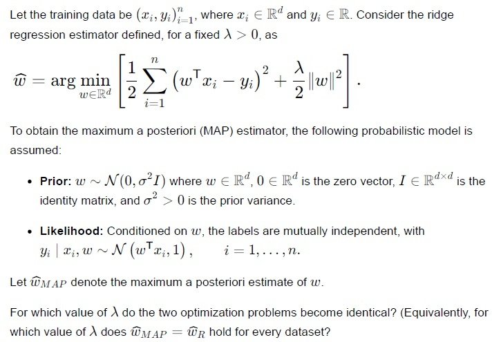
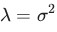
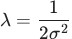
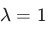
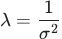
A node in a decision tree contains an equal number of positive and negative training examples. What is the entropy of this node?
- 0
- 0.5
- 1
- It depends on the total number of training examples.
A student  minimizes the sum of squared errors (SSE) loss
minimizes the sum of squared errors (SSE) loss
 while another student
while another student  minimizes the mean squared error (MSE) loss
minimizes the mean squared error (MSE) loss
 Both students use gradient descent with the same learning rate
Both students use gradient descent with the same learning rate  and the same initial parameter vector
and the same initial parameter vector  . Which one of the following statements is correct?
. Which one of the following statements is correct?
minimizes the sum of squared errors (SSE) loss
while another student minimizes the mean squared error (MSE) loss
Both students use gradient descent with the same learning rate and the same initial parameter vector . Which one of the following statements is correct?- They converge to different minimizers, because the losses differ.
- They converge to the same minimizer, but 's steps are
 times smaller; would need learning rate
times smaller; would need learning rate  to reproduce 's trajectory.
to reproduce 's trajectory. - They converge to the same minimizer, and their iterates coincide at every step.
- They converge to the same minimizer, but 's steps are times larger.
A dataset has  is the linear model
is the linear model
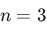
data points and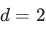
features. The two feature vectors are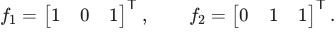
For which label vector is the linear model 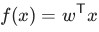
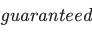
to achieve exactly zero training error?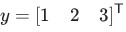
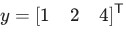
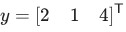
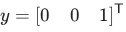
Suppose the label vector  is orthogonal to every feature vector, i.e.
is orthogonal to every feature vector, i.e.  for all
for all  .
.  is the optimal weight obtained after minimizing the objective function of linear regression. Which statement is correct?
is the optimal weight obtained after minimizing the objective function of linear regression. Which statement is correct?
is orthogonal to every feature vector, i.e. for all . is the optimal weight obtained after minimizing the objective function of linear regression. Which statement is correct? and the training error is
and the training error is  .
. and the squared training error equals
and the squared training error equals  .
.- and the squared training error equals .
- The normal equations have no solution.
Which of the following statements about the K-Nearest Neighbours (KNN) algorithm are correct?
- The choice of distance metric can affect the predicted class.
- Once trained, KNN makes predictions without referring to the training data.
- Every prediction does not require computing distances from the test point to all training data.
- The computational cost of prediction generally increases with the size of the training dataset.
A generative classifier models the joint distribution of the feature vector and the class label . For a particular email represented by the feature vector  , suppose
, suppose  and
and  Compute the posterior probability
Compute the posterior probability 
and the class label . For a particular email represented by the feature vector , suppose and Compute the posterior probability